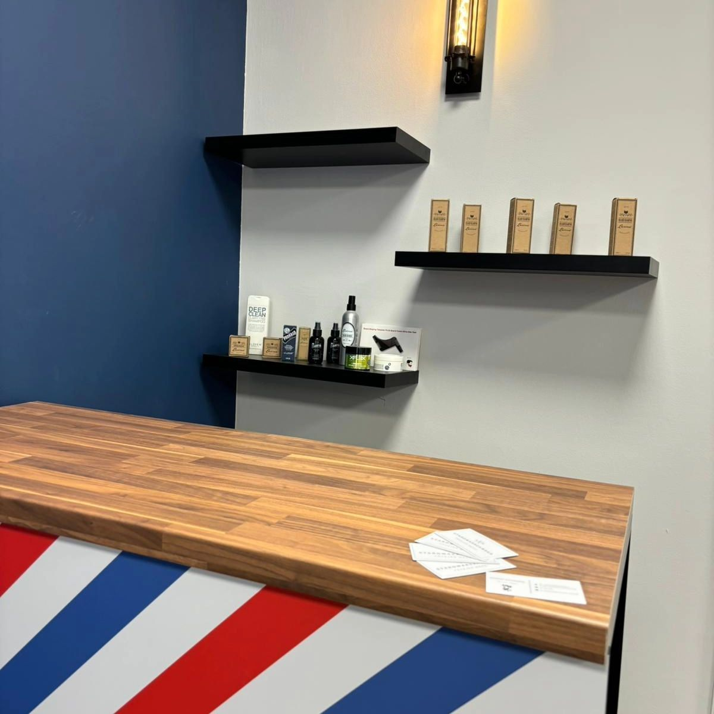
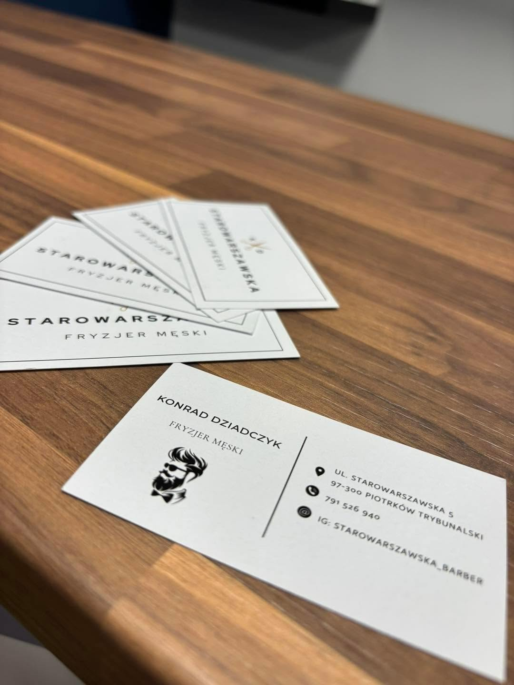

Fryzjer męski przy Starowarszawskiej
Strzyżenie, broda i zarost w spokojnym salonie w centrum Piotrkowa. Za fotelem Konrad Dziadczyk. Umawiasz się na konkretną godzinę i tyle.
4,9 z 143 opinii w Booksy
ul. Starowarszawska 5, 97-300 Piotrków Trybunalski


Jedno miejsce, jeden fotel
Salon prowadzi Konrad Dziadczyk. Sam obsługuje, sam strzyże i sam odpowiada za to, jak wychodzisz. Dlatego wizyty idą po kolei, bez tłoku i bez czekania w kolejce.
Wnętrze jest proste: granatowa ściana, orzechowy blat, ciepłe światło i półka z kosmetykami do brody oraz włosów. Jeśli chcesz kontynuować pielęgnację w domu, powiemy Ci czym i jak.
Usługi i ceny
Strzyżenie, broda i zarost. Wizyta trwa tyle, ile trzeba, i tyle jest zarezerwowane w kalendarzu. W niedzielę do każdej usługi dochodzi 20 zł.
Umów wizytę w Booksy- Strzyżenie męskie klasyczne 30 min
- 50 zł
- Strzyżenie fade / crop 30 min
- 60 zł
- Trymowanie brody 35 min
- 60 zł
- Odsiwianie 30 min
- 70 zł
- Strzyżenie dzieci (6–10 lat) 30 min
- do potwierdzenia
- Wosk 20 min
- 20 zł
Ceny z profilu Booksy. Aktualne stawki i wolne terminy zawsze w Booksy.
Godziny otwarcia
Najpewniej wolny termin sprawdzisz w Booksy. Jeśli wolisz porozmawiać, zadzwoń w godzinach pracy salonu.
Sprawdź wolne terminy- Poniedziałek
- do potwierdzenia
- Wtorek
- do potwierdzenia
- Środa
- 09:00–17:00
- Czwartek
- 09:00–17:00
- Piątek
- 09:00–17:00
- Sobota
- 08:00–14:00
- Niedziela każda usługa +20 zł
- otwarte
Jak nas znaleźć
- Adres
- ul. Starowarszawska 5
97-300 Piotrków Trybunalski - Telefon
- 791 526 940
- Rezerwacja online
- Booksy